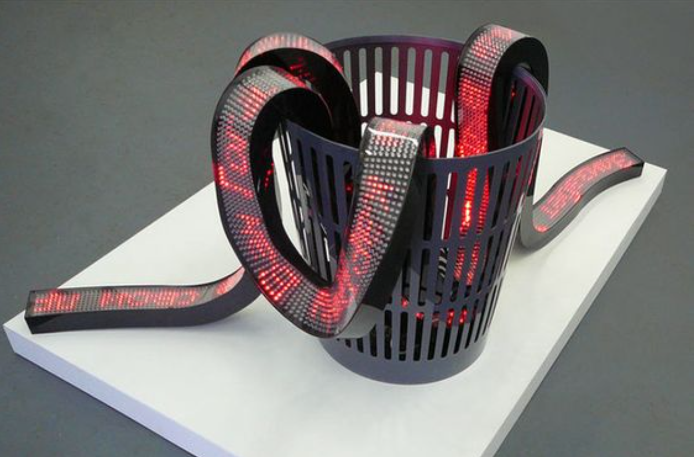
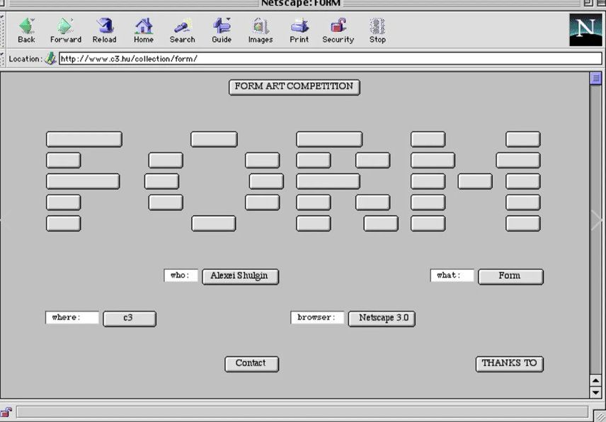
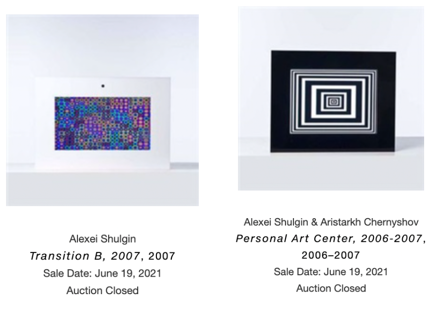

✵ Created by Russian artist Alexei Shulgin, 386 DX was “the world’s first cyberpunk band.” Known for its live performances on city streets and in nightclubs ✵ Its live performances (it only plays covers, ranging from “California Dreaming” by the Mamas and the Papas to Nirvana’s “Smells Like Teen Spirit”) are accompanied by colorful digital graphics reminiscent of early 1990s screensavers. |
✵ Manipulates an antiquated computer with Microsoft Windows version 3.1 and an Intel 386 processor to perform MIDI (Musical Instrument Digital Interface) ✵ Renditions of popular music hits while a synthesized text-to-speech voice "sings" the lyrics. ✵ Performed in public spaces—busking, rather—has also been an important part of the project. |
✵ "Electroboutique" ✵ Created objects/installations that were fun and sometimes interactive. ✵ Each thing would look like a designer object – yet fail to deliver: they’re really about criticizing our consumerist society.  |
  |